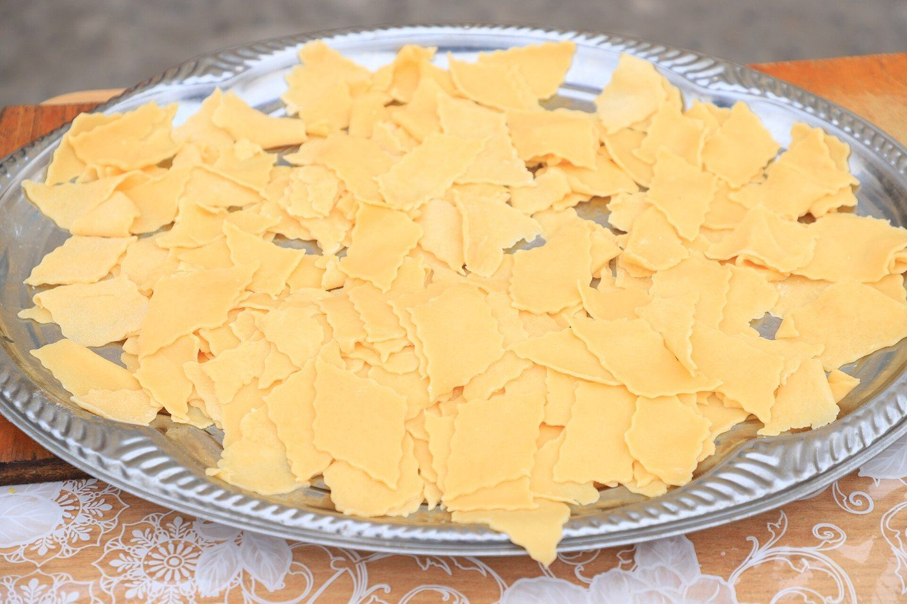
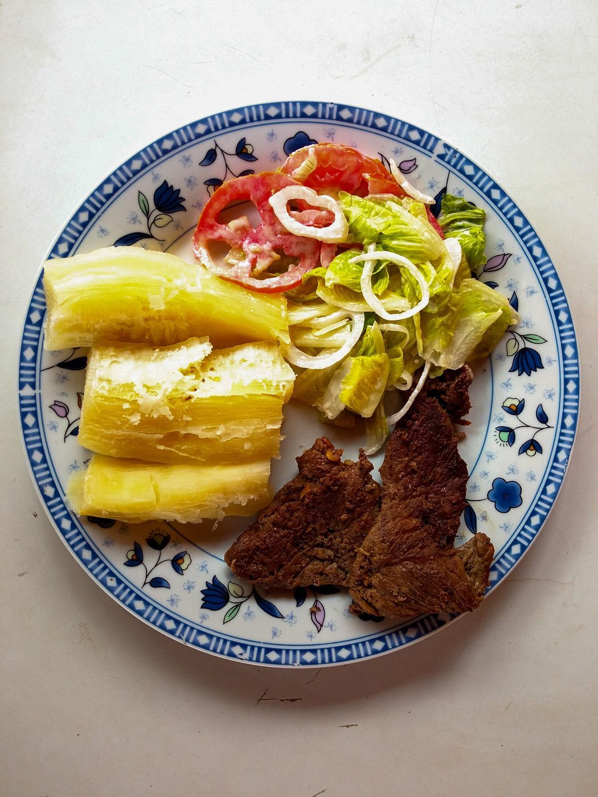

1 ヘッドバンド・2 スライダー
メニュー
「1 ヘッドバンド」「2 スライダー」の受け持ちです。ここは、メニューを載せる場所。内容は準備中のため、いただいた情報をもとに掲載します。


1 ヘッドバンド(へっどばんど)
ヘッドバンドは、左右をつなぐ弓なりの帯
ヘッドバンドは、二つのカップを上でつなぐ曲線の部位で、全体の形を決める骨組みです。このページはお店のメニューへの入口として設けました。メニューの内容・価格は準備中で、確認でき次第こちらに掲載します。



2 スライダー(すらいだー)
スライダーは、長さを合わせるための可動部
スライダーはバンドの端に付いて、カップの高さを調整する部位です。メニューは、いただいた情報をもとにひとつずつ並べます。提供内容や価格は現時点で断定しません。
| メニュー | 準備中 |
|---|---|
| 価格 | 準備中 |
| 予約 | 準備中 |